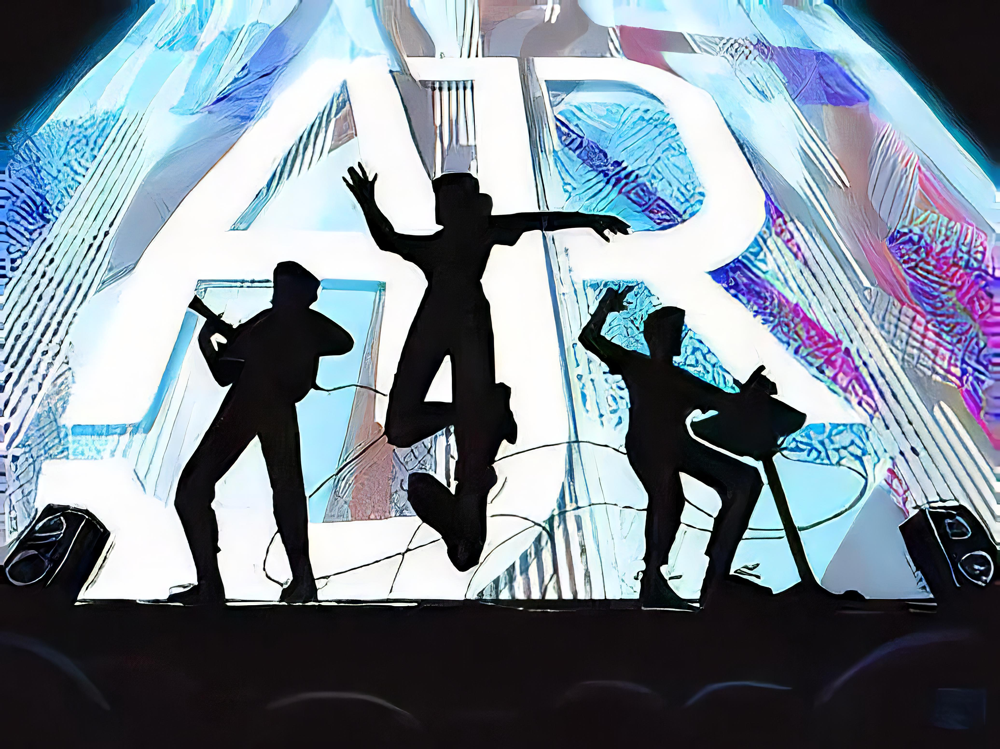
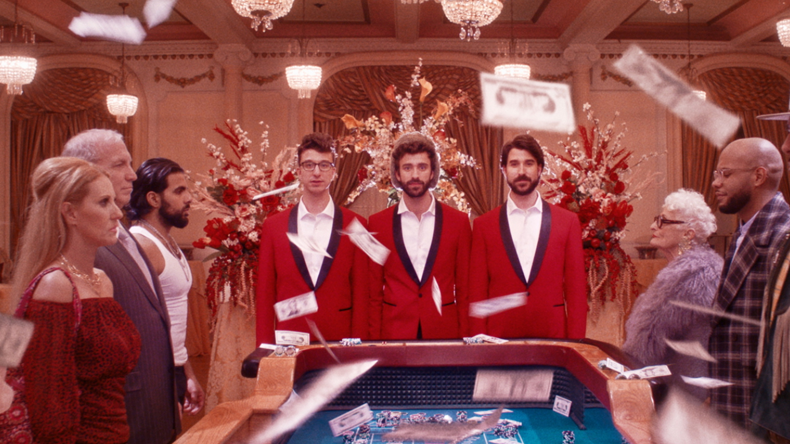
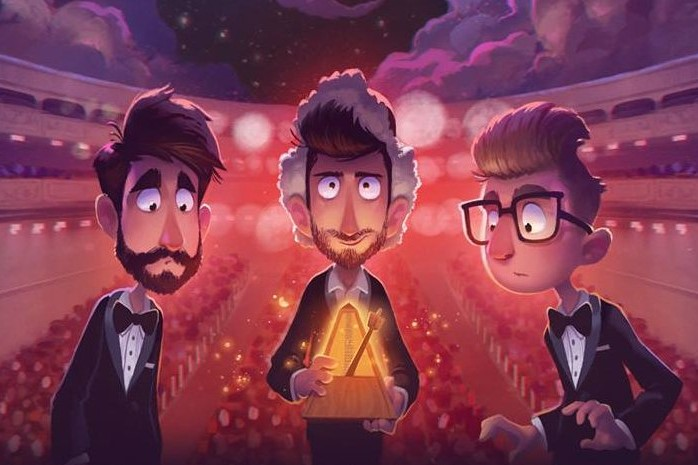

AJR is an American indie pop trio consisting of Jack, Ryan, and Adam Metzger, the multi-instrumentalist brothers. In the living room of their flat, the band writes, produces, and mixes their material. "Weak" and "Bang!" are their most successful singles so far In 2019, their third Neotheater album debuted on the Billboard 200 at number 8, and reached number one on the Top Rock Albums chart.(Wikipedia Contributors, 2020) [2]
AJR


About

The name 'AJR' is derived from the first initials of Adam, Jack, and Ryan. Their musical style has been described as "electric," which incorporates pop, doo-wop, electronic, and dubstep elements.(Wikipedia Contributors, 2020) [2]
| TOP 10 | NAME |
|---|---|
| 1 | BANG! |
| 2 | Burn the House Down |
| 3 | 100 Bad Days |
| 4 | Weak |
| 5 | Sober Up |
| 6 | Bummerland |
| 7 | I'm Ready |
| 8 | Let the Games Begin |
| 9 | Karma |
| 10 | Netflix Trip |
The Band
. Google.Com. https://www.google.com/search?q=ajr+band&tbm=isch&source=iu&ictx=1&tbs=simg:CAEStQIJlk-pBIWoBH8aqQILEKjU2AQaAghCDAsQsIynCBpiCmAIAxIo4A70AdYOoAXVDoEH8Q6eBd4O_1AG4L-86rS_1qL7kvqCXuOukvqSXTLhowV0FJeaCha9dF1t60EZv3KiBGRUegysJQhigxBYcXhiKuEzHhc9pr95s4YZiBi1FYIAQMCxCOrv4IGgoKCAgBEgRtqb4cDAsQne3BCRqWAQocCglnZW50bGVtYW7apYj2AwsKCS9tLzAxOXA1cQodCgptb25vY2hyb21l2qWI9gMLCgkvbS8wMW13a2YKHAoIc3RhbmRpbmfapYj2AwwKCi9tLzAyd3pibWoKGAoFeW91dGjapYj2AwsKCS9tLzAyMWRmcgofCgtwaG90byBzaG9vdNqliPYDDAoKL20vMDJxYmwxbQw&fir=jZzt6bhTZ1m-fM%252CVspjdCs9GysEqM%252C_&vet=1&usg=AI4_-kS6KiEjL
Ur3Hq5UvaiZGiLtcm14iw&sa=X&ved=2ahUKEwjUhJ3h3MXsAhXCDaYKHVq6Ci8Q9QF6BAgpEAQ&biw=1760&bih=886#imgrc=MFk1s0I57j6o7M")
|
. Google.Com. https://www.google.com/search?q=ajr+band&tbm=isch&source=iu&ictx=1&tbs=simg:CAEStQIJlk-pBIWoBH8aqQILEKjU2AQaAghCDAsQsIynCBpiCmAIAxIo4A70AdYOoAXVDoEH8Q6eBd4O_1AG4L-86rS_1qL7kvqCXuOukvqSXTLhowV0FJeaCha9dF1t60EZv3KiBGRUegysJQhigxBYcXhiKuEzHhc9pr95s4YZiBi1FYIAQMCxCOrv4IGgoKCAgBEgRtqb4cDAsQne3BCRqWAQocCglnZW50bGVtYW7apYj2AwsKCS9tLzAxOXA1cQodCgptb25vY2hyb21l2qWI9gMLCgkvbS8wMW13a2YKHAoIc3RhbmRpbmfapYj2AwwKCi9tLzAyd3pibWoKGAoFeW91dGjapYj2AwsKCS9tLzAyMWRmcgofCgtwaG90byBzaG9vdNqliPYDDAoKL20vMDJxYmwxbQw&fir=jZzt6bhTZ1m-fM%252CVspjdCs9GysEqM%252C_&vet=1&usg=AI4_-kS6KiEjLUr3Hq5UvaiZGiLtcm14iw&sa=X&ved=2ahUKEwjUhJ3h3MXsAhXCDaYKHVq6Ci8Q9QF6BAgpEAQ&biw=1760&bih=886#imgrc=MFk1s0I57j6o7M")
|
. Google.Com. https://www.google.com/search?q=ajr+band&tbm=isch&source=iu&ictx=1&tbs=simg:CAEStQIJlk-pBIWoBH8aqQILEKjU2AQaAghCDAsQsIynCBpiCmAIAxIo4A70AdYOoAXVDoEH8Q6eBd4O_1AG4L-86rS_1qL7kvqCXuOukvqSXTLhowV0FJeaCha9dF1t60EZv3KiBGRUegysJQhigxBYcXhiKuEzHhc9pr95s4YZiBi1FYIAQMCxCOrv4IGgoKCAgBEgRtqb4cDAsQne3BCRqWAQocCglnZW50bGVtYW7apYj2AwsKCS9tLzAxOXA1cQodCgptb25vY2hyb21l2qWI9gMLCgkvbS8wMW13a2YKHAoIc3RhbmRpbmfapYj2AwwKCi9tLzAyd3pibWoKGAoFeW91dGjapYj2AwsKCS9tLzAyMWRmcgofCgtwaG90byBzaG9vdNqliPYDDAoKL20vMDJxYmwxbQw&fir=jZzt6bhTZ1m-fM%252CVspjdCs9GysEqM%252C_&vet=1&usg=AI4_-kS6KiEjLUr3Hq5UvaiZGiLtcm14iw&sa=X&ved=2ahUKEwjUhJ3h3MXsAhXCDaYKHVq6Ci8Q9QF6BAgpEAQ&biw=1760&bih=886#imgrc=MFk1s0I57j6o7M")
|
Adam Brett Metzger |
Jack Evan Metzger |
Ryan Joshua Metzger |
|---|---|---|
|
(born August 27, 1990) – vocals, bass guitar, programming, samples, percussion4
|
(born August 16, 1997) – lead vocals, guitar, melodica, ukulele, drums, percussion, keyboards, synthesizers, samples, programming
|
(born March 3, 1994) – vocals, programming, keyboards, ukulele, producing, samples
|
Sources
AJR. (2017). AJR - Weak (Official Video) [YouTube Video]. In YouTube. https://www.youtube.com/watch?v=txCCYBMKdB0
Watson, K. (2018, October 24). What Is Synesthesia? Healthline; Healthline Media. https://www.healthline.com/health/synesthesia
Wikipedia Contributors. (2020, October 20). AJR (band). Wikipedia; Wikimedia Foundation. https://en.wikipedia.org/wiki/AJR_(band)